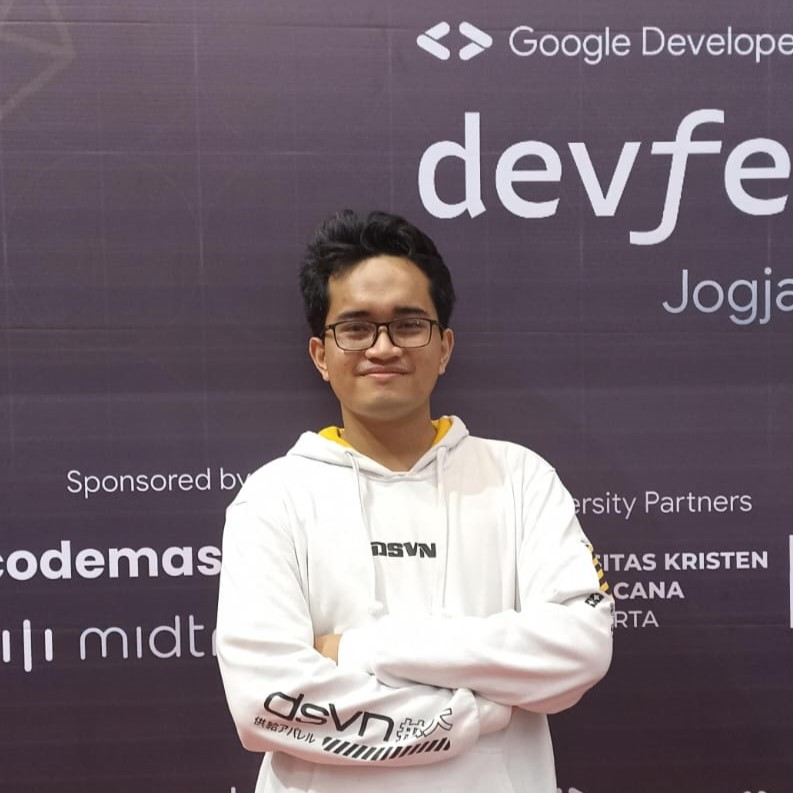

Muhammad Zaki Wicaksono
undergraduate Informatics Student
- zaki.wicak@proton.me
About Me
Hello! I'm Zaki, a tech enthusiast driven by the excitement of crafting innovative solutions through artificial intelligence. My journey into the world of technology began during my elementary school days when I first witnessed the transformative power of automation and robotics.
As my interest in computer science evolved, I found myself drawn to the fascinating realm of BOT development. I firmly believe that this technology not only streamlines our daily lives but also holds the potential for positive disruption across diverse industries.
Beyond my passion for artificial intelligence, I harbor a deep affection for the world of the web. Understanding the web as more than just an information-sharing platform, I recognize it as a dynamic space ripe for freelance opportunities. This realization has fueled my enthusiasm for web development, as I see it as the perfect arena to fuse creativity and practicality.
Combining my proficiency in machine learning with my love for web development, I aspire to create not only intelligent solutions but also seamless and visually appealing experiences. My vision extends beyond technology; it encompasses the harmonious integration of AI into the fabric of the web/app.
Let's collaborate in shaping a future where technology serves as a catalyst for positive change.
As my interest in computer science evolved, I found myself drawn to the fascinating realm of BOT development. I firmly believe that this technology not only streamlines our daily lives but also holds the potential for positive disruption across diverse industries.
Beyond my passion for artificial intelligence, I harbor a deep affection for the world of the web. Understanding the web as more than just an information-sharing platform, I recognize it as a dynamic space ripe for freelance opportunities. This realization has fueled my enthusiasm for web development, as I see it as the perfect arena to fuse creativity and practicality.
Combining my proficiency in machine learning with my love for web development, I aspire to create not only intelligent solutions but also seamless and visually appealing experiences. My vision extends beyond technology; it encompasses the harmonious integration of AI into the fabric of the web/app.
Let's collaborate in shaping a future where technology serves as a catalyst for positive change.
Tech Stack
Soft Skills
- Leadership
- Project Management
- DevOps
- Public Speaking
my Projects
-
Aquarium PH meter
-
Telegram bot
-
Android app
-
Calendar app base on cloud services
-
Automatic Search enggine Bot
Education
-
SMA N 1 SedayuNatural Sciences Major (MIPA)2019 - 2022
-
Universitas Teknologi YogyakartaComputer Science2022 -
Languages
- English
- Bahasa Indonesia
- Melayu
- Arabic